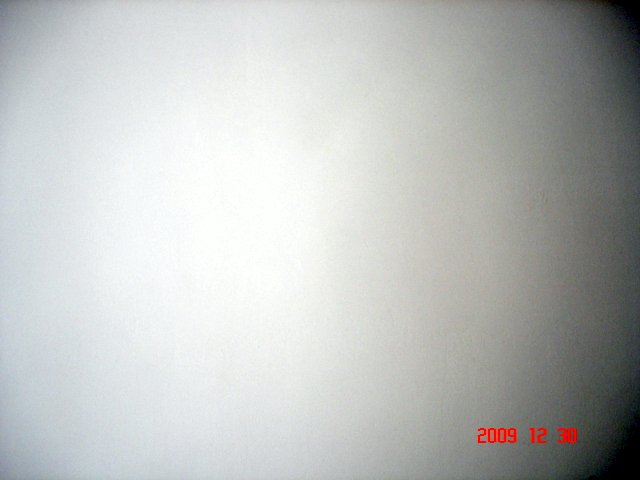
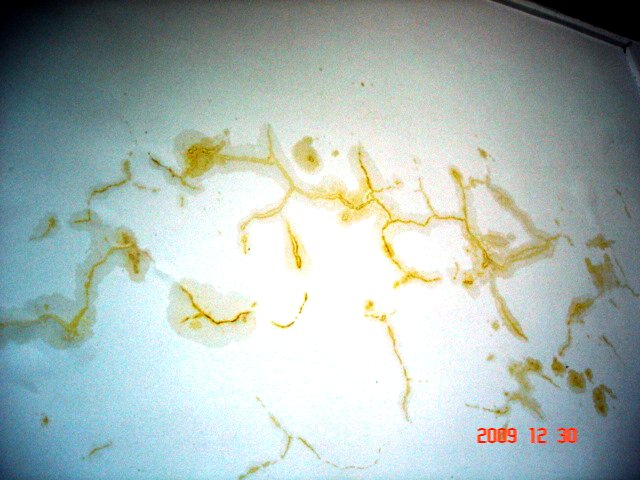
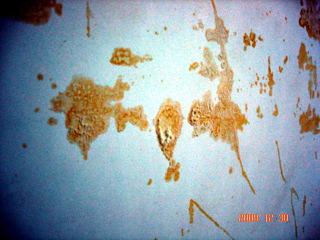
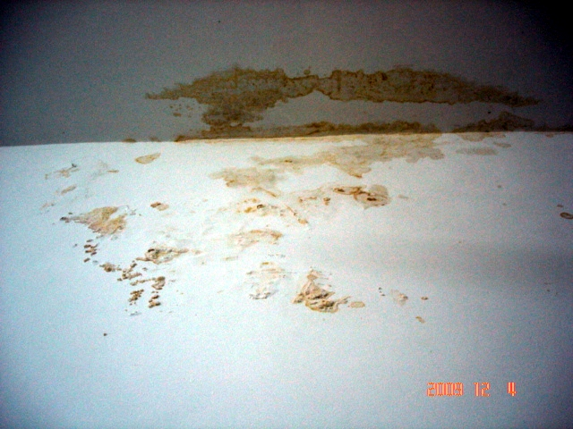
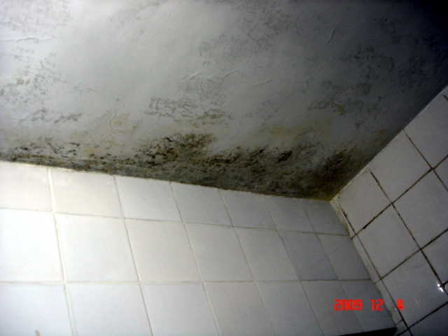
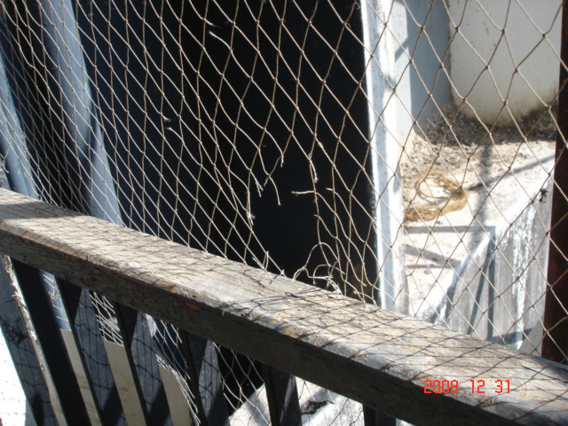

|  | Reference white wall. Luminosity variation because of increasing distance from camera flash. Cost us 60kINR to do the foundation primer and white paint in Jan 2008. Top grade paint, supposed to last ~7 years. |
|  | Wall of kitchen after repairs. Pigmented water from the outside fresh plaster seeps in, cracks open our plaster of Paris, detaches it from the wall, and emerges in ugly patterns. |
|  | Similar graffiti on bedroom wall. Massive peeling and detachment of plaster of Paris, with cotton-like efflorescence, seepage, and discoloration. |
|  | This one is not due to the current repairs, but shows the effect of replacing perfectly fine floor tiles with Marbonite in the summer of 2007, together with concealed plumbing. The bathroom above has a leakage in the concealed pipe. Here that water is seeping into our bedroom... |
|  | ... and here it is seeping into the adjoining bathroom. It can't get past the tiled walls, so it finds the easiest way out: through the ceiling. |
|  | Balcony bird nets have been torn in multiple places by the laborers securing the scaffolding without any care for our property. |